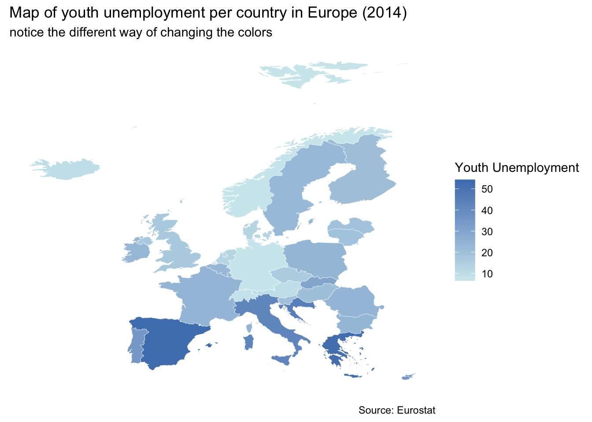
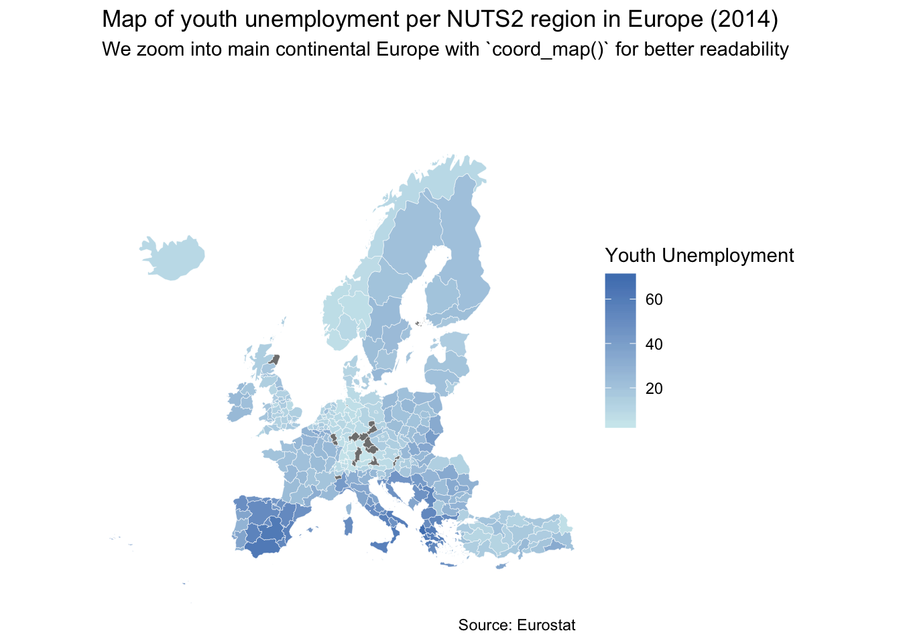

Data Viz: Map with Eurostat Data
Download the script here
Download the data here (same data as on the DataViz Eurostat page)
1 Intro
Creating maps with ggplot is easy. You just have to supply longitudinal data as the x variable and latitudinal data as the y variable and additionally give a group variable (so that R knows, which rows are to be filled together).
This kind of data (long, lat, group) is something which you can get from external sources (we present two options below). Then you have to merge this data with your values (e.g. what you want to fill into the map). So in addition, you need a fourth variable (like the code or the name of the geography).
2 Setup
What do we always do first? Besides the tidyverse, we need the rwolrdmap package (which you have to install).
3 Country level map with rworldmap
eurost <- read_csv2("data/eurostat_data.csv")
eurost <- eurost %>%
filter(time==2014)
mpdta <- map_data("world")
eurost2 <- inner_join(x=eurost, y=mpdta, by=c("geo_name" = "region"))The basic ggplot can be done with geom_polygon. As we said, you supply longitude as x and latitude as y data, group them according to the group indicator and fill in your variable of interest (youth unemployment.)
That’s it.
P <- ggplot()+
geom_polygon(data = eurost2, aes(x=long, y = lat, group = group, fill=unemp_youth_t),
colour = "white", size = 0.1)
P
Mapping is a normal ggplot operation like anything else. You can change the plot in the normal way.
P2 <- P+
theme(panel.grid.minor = element_line(colour = NA),
panel.background = element_rect(fill = NA, colour = NA),
axis.text.x = element_blank(),
axis.text.y = element_blank(), axis.ticks.x = element_blank(),
axis.ticks.y = element_blank(), axis.title = element_blank())+
scale_fill_gradient(name = "Youth Unemployment",
low = rgb(207,233, 238, maxColorValue = 255),
high = rgb(79, 129, 189, maxColorValue = 255))+
labs(title = "Map of youth unemployment per country in Europe (2014)",
subtitle = "notice the different way of changing the colors",
caption = "Source: Eurostat")
P2
4 NUTS2 level plots with eurostat
The eurstat package, which you already know by now, has the function get_eurostat_geospatial which allows you to retrieve a data frame with longitudinal, latitudinal, and group data for maps on different levels of agglomeration.
The overall procedure is the same as above. Once we have data on long, lat, and group, we merge it with our data of interest.
library("eurostat")
df <- get_eurostat_geospatial(output_class = "df",
# data in a data.frame in order to be able to work with ggplot in a tidy way
resolution = "20",
# the higher the resolution, the more processing power needed
nuts_level = "2"
# which NUTS level do you want
)
data_b2 <-
get_eurostat(id = "yth_empl_110",
time_format = "num")
data_b2 <- data_b2 %>%
filter(age=="Y15-24",
sex=="T",
time==2014) %>%
subset(nchar(as.character(geo))>3)
df2 <- inner_join(data_b2, df, by="geo")And the plot in the exact same way.
new <- ggplot()+
geom_polygon(data = df2, aes(x=long, y = lat, group = group, fill=values),
colour = "white", size = 0.1)
newAgain, we simply modify this chart. To zoom into the plot, we use the function coord_map which builds upon the mapproj package (which you have to install first).
library(mapproj)
new2 <- new+
theme(panel.grid.minor = element_line(colour = NA),
panel.background = element_rect(fill = NA, colour = NA),
axis.text.x = element_blank(),
axis.text.y = element_blank(), axis.ticks.x = element_blank(),
axis.ticks.y = element_blank(), axis.title = element_blank())+
scale_fill_gradient(name = "Youth Unemployment",
low = rgb(207,233, 238, maxColorValue = 255),
high = rgb(79, 129, 189, maxColorValue = 255))+
coord_map(xlim = c(-30, 45), ylim = c(30, 75))+
labs(title = "Map of youth unemployment per NUTS2 region in Europe (2014)",
subtitle = "We zoom into main continental Europe with `coord_map()` for better readability",
caption = "Source: Eurostat")
new2